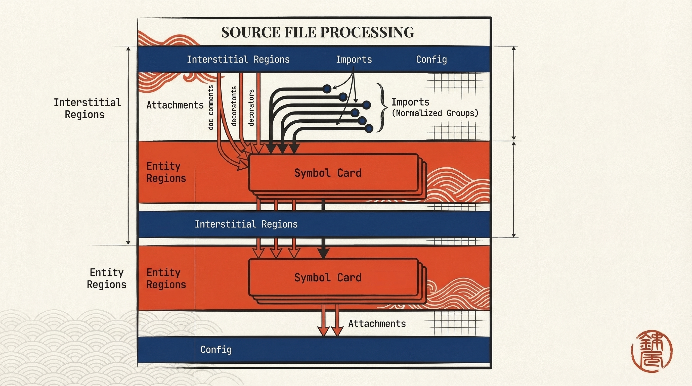
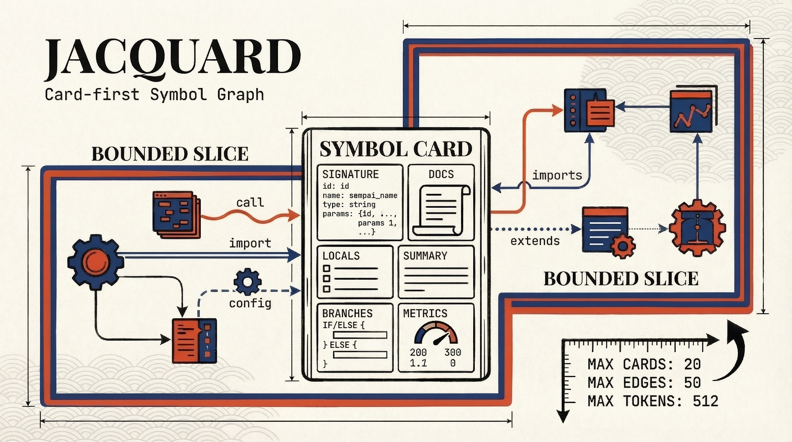
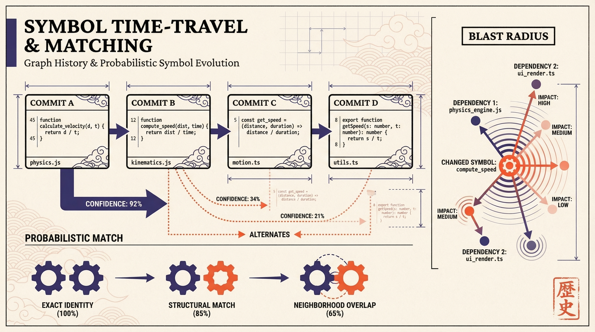

Jacquard makes symbol context small enough to trust.
Files are too big. Call graphs are too thin. Jacquard fixes that by putting a deterministic symbol card at the center, building bounded graph slices around it, and then tracing that slice across recent commits with probabilistic matching when names drift. Context without a budget is not context. It is hoarding.
Unit
The card comes first.
Identity, signature, docs, locals, branches, metrics, and provenance in one portable record.
Graph
Edges stay typed.
call, import, and config are the initial spine. Enough to reason. Not enough to sprawl.
History
Recent changes, not folklore.
The first implementation diffs the slice across the last five commits and exposes confidence instead of inventing certainty.
Discipline
Cheap by default.
get-card lands at structure. Deeper detail is an escalation, not a reflex. Civilisation survives by such rules.
Planned. Jacquard is in active design. The contract below reflects design intent, not current CLI behaviour. Implementation is tracked on the roadmap.
A call graph without cards tells you who talks. Not what they mean.
Jacquard defines a symbol card as the stable observation unit. That card carries a versioned identity, a location-based SymbolRef, a version-scoped content-derived SymbolId, plus structure, documentation, attachments, metrics, dependencies, and provenance. Small enough to cache. Rich enough to inspect. That balance is the whole point.
The design also treats interstitial regions as first-class records. Good. Imports, decorators, module headers, and config spans dominate diffs and dependency signals. If you ignore the space between entities, you miss half the story and most of the churn.
What the card contains
- Identity:
uri, range, language, kind, name, container, and hash-derived ID. - Structure: signature, doc summary, locals, branches, and attachment bundling metadata.
- Semantics: hover, types, references, and call hierarchy when LSP is available.
- Relational data: typed deps plus fan-in and fan-out from the graph layer.

| Detail | What appears | Why it exists |
|---|---|---|
| minimal | Identity only: SymbolRef, SymbolId, name, kind, container. |
Cheap traversal. Enough for ranking and slice membership. |
| signature | Signature fingerprint and parameter surface. | Useful before the system pays to fetch deeper structure. |
| structure | Docs, attachments, locals, branches, basic metrics. | Default for get-card. High utility without requiring live LSP. |
| semantic | Hover, types, and semantic enrichment. | Escalation when the live backend is worth the latency. |
| full | Typed deps, fan metrics, and graph-backed detail. | Used when the question is relational, not merely local. |
Card JSON (full)
{
"card_version": 1,
"symbol": {
"symbol_id": "sym_a1b2c3",
"ref": {
"uri": "file:///repo/src/lib.py",
"range": { "start": {"line":10,"column":0}, "end": {"line":42,"column":1} },
"language": "python", "kind": "function",
"name": "foo", "container": "pkg.mod"
}
},
"signature": {
"display": "def foo(x: int, y: int) -> int",
"params": [{"name":"x","type":"int"}, {"name":"y","type":"int"}],
"returns": "int"
},
"doc": { "docstring": "...", "summary": "...", "source": "tree_sitter" },
"attachments": {
"doc_comments": ["..."],
"decorators": ["@dataclass"],
"normalized": { "decorators": ["dataclass"] },
"bundle_rule": "leading_trivia"
},
"structure": {
"locals": [{"name":"tmp","kind":"variable","decl_line":15}],
"branches": [{"kind":"if","line":18}, {"kind":"for","line":27}]
},
"metrics": { "lines": 33, "cyclomatic": 5, "fan_in": 12, "fan_out": 3 },
"deps": { "calls": ["sym_..."], "imports": ["mod_..."], "config": ["cfg_..."] },
"provenance": { "extracted_at": "2026-03-03T12:34:56Z", "sources": ["tree_sitter","lsp"] },
"etag": "etag_..."
}

The graph is there to answer a question, not to admire itself.
Jacquard builds slices around an entry symbol, not around the fantasy that infinite context is helpful. The default request is depth 2, both directions, all baseline edge types, minimum confidence 0.5, and budgets of 30 cards, 200 edges, and 4000 estimated tokens. That is disciplined enough to ship.
The traversal algorithm uses depth as a hard limit and a priority score to decide which frontier expansions deserve budget. High-confidence edges beat hand-wavy ones. Nodes with higher fan-in or proximity to the entry symbol beat irrelevant detours. Novelty matters because five cards from the same file often tell one story five times.
Slice rules worth keeping
- LSP call hierarchy remains the high-confidence source for
calledges. - Tree-sitter interstitial passes provide the first
importand someconfigedges. - Partial graphs remain explicit via
resolutionandconfidence. Missing evidence is not silence. It is uncertainty.
Spillover
The slice response includes a spillover field that signals whether budget limits truncated the traversal and, if so, exposes the frontier candidates for optional pagination.
"spillover": {
"truncated": true,
"frontier": [
"sym::pkg::auth::validate_token",
"sym::pkg::auth::parse_claims"
]
}
Frontier Scoring
Not all frontier expansions deserve budget. The priority score weights confidence (how trustworthy is the edge?), fan-in (how many other symbols depend on this one?), and proximity to the entry symbol. Novelty matters because five cards from the same file often tell one story five times. The score is deterministic — given the same graph state, the same nodes win.
Names drift. Code moves. The system still has to keep up.
graph-history takes the current slice and walks it backward over recent commits. The initial mode is snapshots_on_demand: load only the blobs the slice needs, parse them directly from git, and stay within explicit blob, time, and file-count limits. Sensible. A ledger cache can wait until the system earns the complexity.
Matching across commits is deliberately staged. Phase 1 tries stable identity. Phase 2 catches rename-friendly body hashes. Phase 3 leans on structural hashes. Phases 4 and 5 bring fuzzy similarity and neighbourhood overlap into play, then apply global assignment so two old symbols do not both marry the same new one. Monogamy remains underrated.
Guardrails
- Expose alternates and probabilities instead of pretending every match is obvious.
- Short-circuit on duplicate-name overload with
max_duplicates. - Emit risk warnings such as
DependencyAlsoModifiedandDependentAlsoModified.

| Phase | Mechanism | Why it matters |
|---|---|---|
| 1 | Type, name, parent, and file hint. | Fast win when the symbol identity is still boring. Boring is good. |
| 2 | Body hash or name-stripped hash. | Catches renames that preserve the body. |
| 3 | AST-normalized structural hash. | Survives formatting churn and some signature edits. |
| 4 | Fuzzy similarity over names, signatures, text, and structure. | Finds plausible matches when identity has become inconvenient. |
| 5 | Neighbourhood refinement plus bipartite assignment. | Turns local guesses into globally consistent mappings. |
| Feature Category | Signals |
|---|---|
| Identity | Kind, language, name tokens, container/module path tokens. |
| Signature | Arity, parameter name set, type multiset, return type. |
| Syntactic | AST node-kind histogram, control-flow skeleton, cyclomatic estimate, literal fingerprint. |
| Text | Docstring/comment fingerprint, attachment and decorator fingerprints. |
| Neighbourhood | Outgoing/incoming call sets, import/config adjacency, 1-hop and 2-hop sketches. |
Debug Match Output
{
"best_match": { "symbol_id": "sym_...", "p": 0.91 },
"alternates": [
{ "symbol_id": "sym_...", "p": 0.42 }
],
"features": ["neighbourhood_overlap", "signature"],
"phase": 4
}
This example shows the extra fields emitted with --debug-matching, including reason codes such as name_tokens, signature, ast_shape, and neighbourhood_overlap.
Weighted Scoring
Phases 4 and 5 use a combined similarity function mapped to calibrated probability via logistic transform:
p = 1 / (1 + exp(−S))
Weights are heuristic initially, then tuned on labelled refactors.
Three commands. That is enough to start.
The protocol surface is compact because it should be. First ask for a card. Then ask for a slice. Then ask how that slice changed. Anything else at this stage is garnish pretending to be architecture.
get-card
weaver observe get-card \ --uri file:///repo/src/lib.py \ --position 10:0 \ --detail structure
graph-slice
weaver observe graph-slice \ --uri file:///repo/src/lib.py \ --position 10:0 \ --depth 2 --max-cards 30
graph-history
weaver observe graph-history \ --uri file:///repo/src/lib.py \ --position 10:0 \ --commits 5 --match-threshold 0.6
| Command | Primary job | Default posture |
|---|---|---|
| get-card | Return one SymbolCard by URI and position or by ID. |
structure detail. High signal without depending on live LSP. |
| graph-slice | Build a bounded slice around the entry symbol. | Depth 2, direction both, all baseline edges, budgeted output. |
| graph-history | Replay that slice over recent commits and report deltas. | 5 commits, snapshots_on_demand, threshold 0.6, 3 alternates. |
The design stays upright because it admits failure.
LSP may be absent. Fan-out may explode. History parsing may hit blob limits. Homonyms may crowd the match space. Jacquard handles each of these as an exposed quality issue, not a silent downgrade. That is the difference between a diagnostic tool and a confidence trick.
The rollout plan is equally disciplined: get-card first, graph-slice second, graph-history third, matching reason codes after that, and ledger cache only when the simpler mode proves its value. Start with the cheap truth. Add expensive convenience later.
Failure Modes
- If LSP is down, the card still reaches
structureand the graph falls back to heuristic edges with lower confidence. - If the graph starts to fan out,
max_cards,max_edges, and frontier pruning stop the bleed. - If history extraction times out or blobs get too large, the system returns coarse diffs or explicit unavailability.
Operational Expectations
- Reuse Tree-sitter parser registries and cache entity tables by repo, ref, path, and blob hash.
- Bound concurrency in history mode so one long query does not starve the rest of the daemon.
- Emit tracing spans, reason codes, and counters for duplicate overload and fallback triggers.
Semantic Risk Warnings
graph-history deltas include explicit warnings for semantic risk patterns. Warnings are scoped to the default slice neighbourhood (depth 2) and weigh functional changes higher than text.
Symbol A changed and it depends on symbol B that also changed.
Symbol A changed and a dependent symbol changed too.
Output includes a blast-radius score within the slice: propagate along edges with decay by graph distance, amplified by fan-in growth.
Relationship to the rest of Weaver
Sempai is the discovery front door. Jacquard is what happens after discovery. One finds the interesting symbol. The other turns that symbol into a stable card, a bounded neighbourhood, and a recent change story. Search without context is brittle. Context without search is slow. The system needs both.
The backend model follows Weaver’s existing three-way split: Tree-sitter for extraction, LSP for semantic enrichment, and a relational layer for slices, deltas, and fan metrics. The design is additive, not theatrical.
Primary sources
Core design memo
Internal source: ../weaver/docs/jacquard-card-first-symbol-graph-design.md.
Design anchors carried through
- Cards-first extraction with typed edges and explicit budgets.
- Tree-sitter plus LSP plus relational graph as the architecture spine.
- Recent-commit history with probabilistic matching, ambiguity handling, and blast-radius warnings.